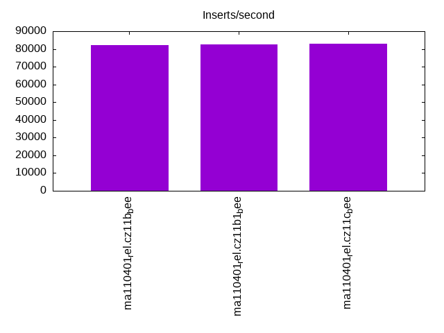
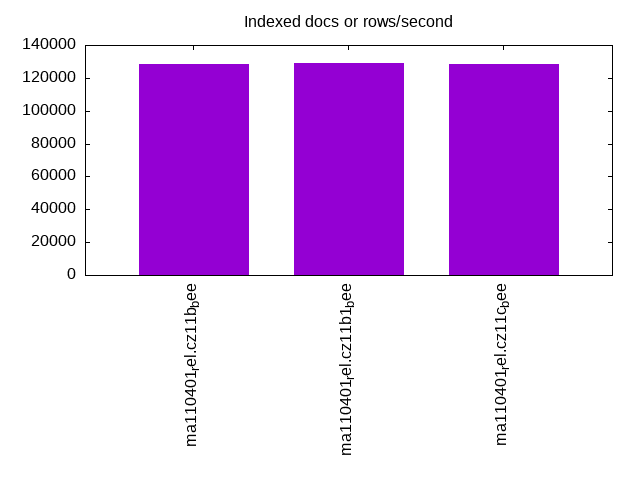
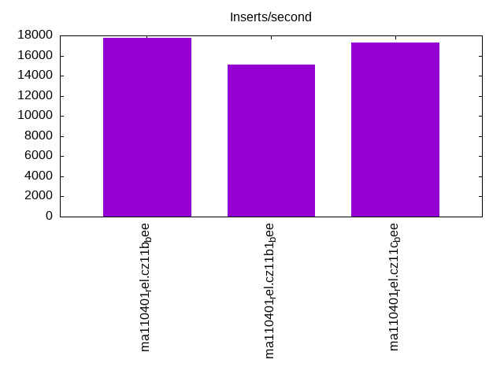
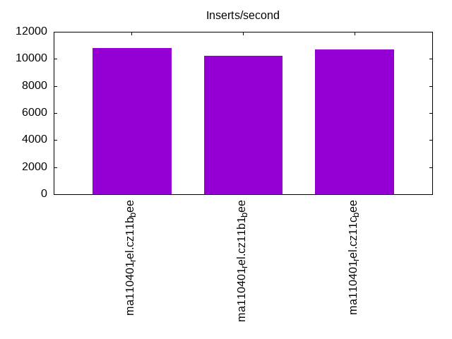
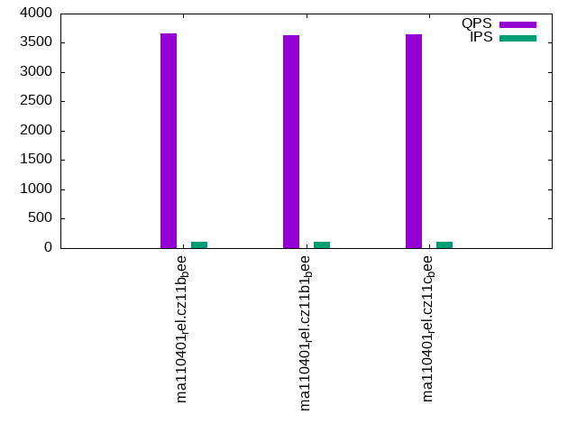
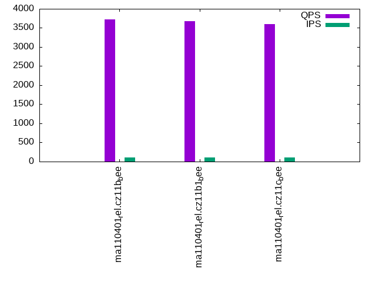
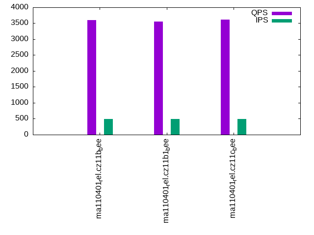
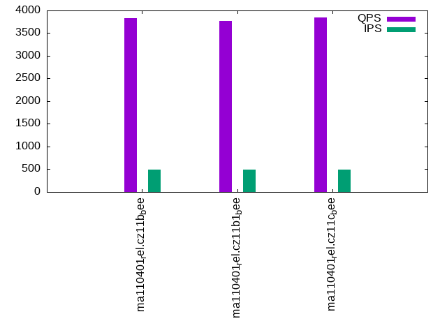
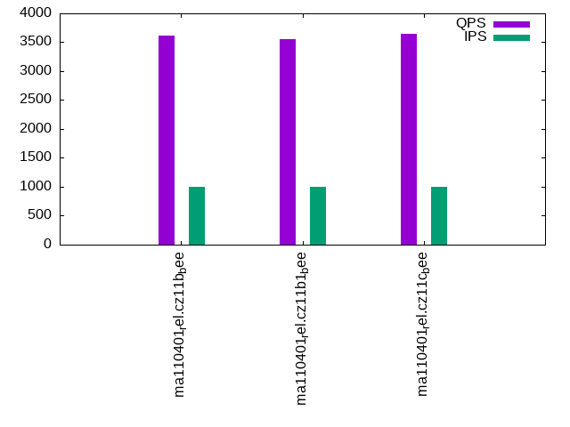
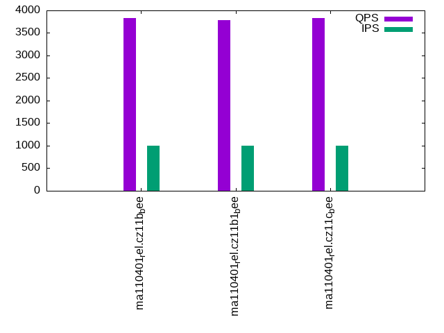

This is a report for the insert benchmark with 30M docs and 1 client(s). It is generated by scripts (bash, awk, sed) and Tufte might not be impressed. An overview of the insert benchmark is here and a short update is here. Below, by DBMS, I mean DBMS+version.config. An example is my8020.c10b40 where my means MySQL, 8020 is version 8.0.20 and c10b40 is the name for the configuration file.
The test server has 8 AMD cores, 16G RAM and an NVMe SSD. It is described here as the Beelink. The benchmark was run with 1 client and there were 1 or 3 connections per client (1 for queries or inserts without rate limits, 1+1 for rate limited inserts+deletes). It uses 1 table. It loads 30M rows per table without secondary indexes, creates 3 secondary indexes per table, then inserts 40m+10m rows per table with a delete per insert to avoid growing the table. It then does 6 read+write tests for 1800s each that do queries as fast as possible with 100,100,500,500,1000,1000 inserts/s and the same for deletes/s per client concurrent with the queries. The database is cached in memory. Clients and the DBMS share one server. The per-database configs are in the per-database subdirectories here.
The tested DBMS are:
The numbers are inserts/s for l.i0, l.i1 and l.i2, indexed docs (or rows) /s for l.x and queries/s for qr100, qp100 thru qr1000, qp1000" The values are the average rate over the entire test for inserts (IPS) and queries (QPS). The range of values for IPS and QPS is split into 3 parts: bottom 25%, middle 50%, top 25%. Values in the bottom 25% have a red background, values in the top 25% have a green background and values in the middle have no color. A gray background is used for values that can be ignored because the DBMS did not sustain the target insert rate. Red backgrounds are not used when the minimum value is within 80% of the max value.
| dbms | l.i0 | l.x | l.i1 | l.i2 | qr100 | qp100 | qr500 | qp500 | qr1000 | qp1000 |
|---|---|---|---|---|---|---|---|---|---|---|
| ma110401_rel.cz11b_bee | 82192 | 128206 | 17770 | 10799 | 3667 | 3728 | 3593 | 3835 | 3618 | 3836 |
| ma110401_rel.cz11b1_bee | 82645 | 128756 | 15094 | 10214 | 3633 | 3674 | 3559 | 3765 | 3552 | 3784 |
| ma110401_rel.cz11c_bee | 83102 | 128206 | 17264 | 10707 | 3642 | 3597 | 3622 | 3849 | 3645 | 3836 |
This table has relative throughput, throughput for the DBMS relative to the DBMS in the first line, using the absolute throughput from the previous table. Values less than 0.95 have a yellow background. Values greater than 1.05 have a blue background.
| dbms | l.i0 | l.x | l.i1 | l.i2 | qr100 | qp100 | qr500 | qp500 | qr1000 | qp1000 |
|---|---|---|---|---|---|---|---|---|---|---|
| ma110401_rel.cz11b_bee | 1.00 | 1.00 | 1.00 | 1.00 | 1.00 | 1.00 | 1.00 | 1.00 | 1.00 | 1.00 |
| ma110401_rel.cz11b1_bee | 1.01 | 1.00 | 0.85 | 0.95 | 0.99 | 0.99 | 0.99 | 0.98 | 0.98 | 0.99 |
| ma110401_rel.cz11c_bee | 1.01 | 1.00 | 0.97 | 0.99 | 0.99 | 0.96 | 1.01 | 1.00 | 1.01 | 1.00 |
This lists the average rate of inserts/s for the tests that do inserts concurrent with queries. For such tests the query rate is listed in the table above. The read+write tests are setup so that the insert rate should match the target rate every second. Cells that are not at least 95% of the target have a red background to indicate a failure to satisfy the target.
| dbms | qr100.L1 | qp100.L2 | qr500.L3 | qp500.L4 | qr1000.L5 | qp1000.L6 |
|---|---|---|---|---|---|---|
| ma110401_rel.cz11b_bee | 100 | 100 | 499 | 499 | 998 | 998 |
| ma110401_rel.cz11b1_bee | 100 | 100 | 499 | 499 | 998 | 998 |
| ma110401_rel.cz11c_bee | 100 | 100 | 499 | 499 | 998 | 998 |
| target | 100 | 100 | 500 | 500 | 1000 | 1000 |
l.i0: load without secondary indexes. Graphs for performance per 1-second interval are here.
Average throughput:
Insert response time histogram: each cell has the percentage of responses that take <= the time in the header and max is the max response time in seconds. For the max column values in the top 25% of the range have a red background and in the bottom 25% of the range have a green background. The red background is not used when the min value is within 80% of the max value.
| dbms | 256us | 1ms | 4ms | 16ms | 64ms | 256ms | 1s | 4s | 16s | gt | max |
|---|---|---|---|---|---|---|---|---|---|---|---|
| ma110401_rel.cz11b_bee | 2.688 | 96.998 | 0.187 | 0.122 | 0.005 | 0.206 | |||||
| ma110401_rel.cz11b1_bee | 4.149 | 95.520 | 0.200 | 0.123 | 0.008 | 0.204 | |||||
| ma110401_rel.cz11c_bee | 4.374 | 95.313 | 0.190 | 0.119 | 0.005 | 0.204 |
Performance metrics for the DBMS listed above. Some are normalized by throughput, others are not. Legend for results is here.
ips qps rps rmbps wps wmbps rpq rkbpq wpi wkbpi csps cpups cspq cpupq dbgb1 dbgb2 rss maxop p50 p99 tag 82192 0 0 0.0 252.5 21.1 0.000 0.000 0.003 0.262 11329 25.9 0.138 25 2.0 17.8 2.3 0.206 82810 69657 ma110401_rel.cz11b_bee 82645 0 0 0.0 369.2 23.0 0.000 0.000 0.004 0.284 11860 25.9 0.144 25 2.0 6.8 2.3 0.204 83507 69839 ma110401_rel.cz11b1_bee 83102 0 0 0.0 52.5 21.2 0.000 0.000 0.001 0.262 11328 25.9 0.136 25 2.0 17.8 2.3 0.204 83805 68653 ma110401_rel.cz11c_bee
l.x: create secondary indexes.
Average throughput:
Performance metrics for the DBMS listed above. Some are normalized by throughput, others are not. Legend for results is here.
ips qps rps rmbps wps wmbps rpq rkbpq wpi wkbpi csps cpups cspq cpupq dbgb1 dbgb2 rss maxop p50 p99 tag 128206 0 0 0.0 807.7 109.8 0.000 0.000 0.006 0.877 2916 12.1 0.023 8 4.5 20.3 3.8 0.002 NA NA ma110401_rel.cz11b_bee 128756 0 0 0.0 728.2 108.6 0.000 0.000 0.006 0.864 2389 12.0 0.019 7 4.5 9.3 3.8 0.002 NA NA ma110401_rel.cz11b1_bee 128206 0 0 0.0 270.9 109.8 0.000 0.000 0.002 0.877 3184 12.0 0.025 7 4.5 20.3 3.8 0.002 NA NA ma110401_rel.cz11c_bee
l.i1: continue load after secondary indexes created with 50 inserts per transaction. Graphs for performance per 1-second interval are here.
Average throughput:
Insert response time histogram: each cell has the percentage of responses that take <= the time in the header and max is the max response time in seconds. For the max column values in the top 25% of the range have a red background and in the bottom 25% of the range have a green background. The red background is not used when the min value is within 80% of the max value.
| dbms | 256us | 1ms | 4ms | 16ms | 64ms | 256ms | 1s | 4s | 16s | gt | max |
|---|---|---|---|---|---|---|---|---|---|---|---|
| ma110401_rel.cz11b_bee | 94.301 | 5.211 | 0.485 | 0.004 | 0.189 | ||||||
| ma110401_rel.cz11b1_bee | 88.582 | 10.022 | 1.392 | 0.004 | 0.158 | ||||||
| ma110401_rel.cz11c_bee | 93.966 | 5.289 | 0.732 | 0.012 | 0.001 | 0.451 |
Delete response time histogram: each cell has the percentage of responses that take <= the time in the header and max is the max response time in seconds. For the max column values in the top 25% of the range have a red background and in the bottom 25% of the range have a green background. The red background is not used when the min value is within 80% of the max value.
| dbms | 256us | 1ms | 4ms | 16ms | 64ms | 256ms | 1s | 4s | 16s | gt | max |
|---|---|---|---|---|---|---|---|---|---|---|---|
| ma110401_rel.cz11b_bee | 96.023 | 3.587 | 0.388 | 0.003 | 0.188 | ||||||
| ma110401_rel.cz11b1_bee | 90.808 | 8.017 | 1.173 | 0.002 | 0.148 | ||||||
| ma110401_rel.cz11c_bee | 95.709 | 3.675 | 0.605 | 0.011 | nonzero | 0.424 |
Performance metrics for the DBMS listed above. Some are normalized by throughput, others are not. Legend for results is here.
ips qps rps rmbps wps wmbps rpq rkbpq wpi wkbpi csps cpups cspq cpupq dbgb1 dbgb2 rss maxop p50 p99 tag 17770 0 685 2.7 2634.6 95.1 0.039 0.154 0.148 5.483 46630 32.8 2.624 148 6.2 22.0 6.1 0.189 18380 5194 ma110401_rel.cz11b_bee 15094 0 60 0.2 6985.5 217.9 0.004 0.016 0.463 14.784 62069 30.4 4.112 161 6.1 11.0 6.0 0.158 15233 5244 ma110401_rel.cz11b1_bee 17264 0 663 2.6 2422.0 92.6 0.038 0.154 0.140 5.492 42459 32.3 2.459 150 6.2 22.0 6.1 0.451 17780 4895 ma110401_rel.cz11c_bee
l.i2: continue load after secondary indexes created with 5 inserts per transaction. Graphs for performance per 1-second interval are here.
Average throughput:
Insert response time histogram: each cell has the percentage of responses that take <= the time in the header and max is the max response time in seconds. For the max column values in the top 25% of the range have a red background and in the bottom 25% of the range have a green background. The red background is not used when the min value is within 80% of the max value.
| dbms | 256us | 1ms | 4ms | 16ms | 64ms | 256ms | 1s | 4s | 16s | gt | max |
|---|---|---|---|---|---|---|---|---|---|---|---|
| ma110401_rel.cz11b_bee | 0.358 | 99.424 | 0.111 | 0.104 | 0.003 | nonzero | 0.064 | ||||
| ma110401_rel.cz11b1_bee | 0.665 | 98.651 | 0.305 | 0.371 | 0.008 | 0.045 | |||||
| ma110401_rel.cz11c_bee | 0.708 | 99.044 | 0.116 | 0.124 | 0.008 | nonzero | 0.093 |
Delete response time histogram: each cell has the percentage of responses that take <= the time in the header and max is the max response time in seconds. For the max column values in the top 25% of the range have a red background and in the bottom 25% of the range have a green background. The red background is not used when the min value is within 80% of the max value.
| dbms | 256us | 1ms | 4ms | 16ms | 64ms | 256ms | 1s | 4s | 16s | gt | max |
|---|---|---|---|---|---|---|---|---|---|---|---|
| ma110401_rel.cz11b_bee | 1.129 | 98.652 | 0.117 | 0.098 | 0.003 | nonzero | 0.064 | ||||
| ma110401_rel.cz11b1_bee | 1.519 | 97.830 | 0.296 | 0.349 | 0.007 | 0.045 | |||||
| ma110401_rel.cz11c_bee | 1.406 | 98.354 | 0.116 | 0.117 | 0.007 | nonzero | 0.067 |
Performance metrics for the DBMS listed above. Some are normalized by throughput, others are not. Legend for results is here.
ips qps rps rmbps wps wmbps rpq rkbpq wpi wkbpi csps cpups cspq cpupq dbgb1 dbgb2 rss maxop p50 p99 tag 10799 0 1719 6.7 1320.2 49.4 0.159 0.637 0.122 4.680 60542 34.8 5.606 258 6.2 22.0 6.1 0.064 10913 9004 ma110401_rel.cz11b_bee 10214 0 0 0.0 4089.2 129.1 0.000 0.000 0.400 12.944 67045 34.8 6.564 273 6.1 11.0 6.0 0.045 10129 8450 ma110401_rel.cz11b1_bee 10707 0 1702 6.6 1253.1 48.8 0.159 0.636 0.117 4.666 58604 34.6 5.474 259 6.2 22.0 6.1 0.093 10918 8426 ma110401_rel.cz11c_bee
qr100.L1: range queries with 100 insert/s per client. Graphs for performance per 1-second interval are here.
Average throughput:
Query response time histogram: each cell has the percentage of responses that take <= the time in the header and max is the max response time in seconds. For max values in the top 25% of the range have a red background and in the bottom 25% of the range have a green background. The red background is not used when the min value is within 80% of the max value.
| dbms | 256us | 1ms | 4ms | 16ms | 64ms | 256ms | 1s | 4s | 16s | gt | max |
|---|---|---|---|---|---|---|---|---|---|---|---|
| ma110401_rel.cz11b_bee | 60.353 | 39.646 | nonzero | nonzero | 0.004 | ||||||
| ma110401_rel.cz11b1_bee | 58.305 | 41.695 | nonzero | 0.003 | |||||||
| ma110401_rel.cz11c_bee | 59.249 | 40.751 | nonzero | nonzero | 0.014 |
Insert response time histogram: each cell has the percentage of responses that take <= the time in the header and max is the max response time in seconds. For max values in the top 25% of the range have a red background and in the bottom 25% of the range have a green background. The red background is not used when the min value is within 80% of the max value.
| dbms | 256us | 1ms | 4ms | 16ms | 64ms | 256ms | 1s | 4s | 16s | gt | max |
|---|---|---|---|---|---|---|---|---|---|---|---|
| ma110401_rel.cz11b_bee | 53.250 | 46.722 | 0.028 | 0.020 | |||||||
| ma110401_rel.cz11b1_bee | 99.944 | 0.028 | 0.028 | 0.023 | |||||||
| ma110401_rel.cz11c_bee | 53.306 | 46.694 | 0.012 |
Delete response time histogram: each cell has the percentage of responses that take <= the time in the header and max is the max response time in seconds. For max values in the top 25% of the range have a red background and in the bottom 25% of the range have a green background. The red background is not used when the min value is within 80% of the max value.
| dbms | 256us | 1ms | 4ms | 16ms | 64ms | 256ms | 1s | 4s | 16s | gt | max |
|---|---|---|---|---|---|---|---|---|---|---|---|
| ma110401_rel.cz11b_bee | 53.306 | 46.694 | 0.012 | ||||||||
| ma110401_rel.cz11b1_bee | 100.000 | 0.003 | |||||||||
| ma110401_rel.cz11c_bee | 53.278 | 46.722 | 0.013 |
Performance metrics for the DBMS listed above. Some are normalized by throughput, others are not. Legend for results is here.
ips qps rps rmbps wps wmbps rpq rkbpq wpi wkbpi csps cpups cspq cpupq dbgb1 dbgb2 rss maxop p50 p99 tag 100 3667 3 0.0 8.2 0.3 0.001 0.003 0.082 2.944 14247 13.0 3.885 284 6.2 22.0 6.1 0.004 3644 3484 ma110401_rel.cz11b_bee 100 3633 0 0.0 8.1 0.3 0.000 0.000 0.082 2.959 14113 12.8 3.885 282 6.1 11.0 5.9 0.003 3612 3452 ma110401_rel.cz11b1_bee 100 3642 3 0.0 8.1 0.3 0.001 0.003 0.081 2.962 14149 12.8 3.885 281 6.2 22.0 6.1 0.014 3612 3468 ma110401_rel.cz11c_bee
qp100.L2: point queries with 100 insert/s per client. Graphs for performance per 1-second interval are here.
Average throughput:
Query response time histogram: each cell has the percentage of responses that take <= the time in the header and max is the max response time in seconds. For max values in the top 25% of the range have a red background and in the bottom 25% of the range have a green background. The red background is not used when the min value is within 80% of the max value.
| dbms | 256us | 1ms | 4ms | 16ms | 64ms | 256ms | 1s | 4s | 16s | gt | max |
|---|---|---|---|---|---|---|---|---|---|---|---|
| ma110401_rel.cz11b_bee | 77.686 | 22.312 | 0.002 | nonzero | 0.007 | ||||||
| ma110401_rel.cz11b1_bee | 69.983 | 30.015 | 0.001 | nonzero | 0.005 | ||||||
| ma110401_rel.cz11c_bee | 63.743 | 36.256 | 0.001 | nonzero | 0.004 |
Insert response time histogram: each cell has the percentage of responses that take <= the time in the header and max is the max response time in seconds. For max values in the top 25% of the range have a red background and in the bottom 25% of the range have a green background. The red background is not used when the min value is within 80% of the max value.
| dbms | 256us | 1ms | 4ms | 16ms | 64ms | 256ms | 1s | 4s | 16s | gt | max |
|---|---|---|---|---|---|---|---|---|---|---|---|
| ma110401_rel.cz11b_bee | 53.306 | 46.694 | 0.012 | ||||||||
| ma110401_rel.cz11b1_bee | 99.972 | 0.028 | 0.022 | ||||||||
| ma110401_rel.cz11c_bee | 53.000 | 47.000 | 0.012 |
Delete response time histogram: each cell has the percentage of responses that take <= the time in the header and max is the max response time in seconds. For max values in the top 25% of the range have a red background and in the bottom 25% of the range have a green background. The red background is not used when the min value is within 80% of the max value.
| dbms | 256us | 1ms | 4ms | 16ms | 64ms | 256ms | 1s | 4s | 16s | gt | max |
|---|---|---|---|---|---|---|---|---|---|---|---|
| ma110401_rel.cz11b_bee | 53.333 | 46.667 | 0.012 | ||||||||
| ma110401_rel.cz11b1_bee | 99.972 | 0.028 | 0.021 | ||||||||
| ma110401_rel.cz11c_bee | 53.111 | 46.889 | 0.012 |
Performance metrics for the DBMS listed above. Some are normalized by throughput, others are not. Legend for results is here.
ips qps rps rmbps wps wmbps rpq rkbpq wpi wkbpi csps cpups cspq cpupq dbgb1 dbgb2 rss maxop p50 p99 tag 100 3728 3 0.0 14.0 0.5 0.001 0.003 0.140 4.715 15297 14.3 4.103 307 6.2 22.0 6.1 0.007 3580 3355 ma110401_rel.cz11b_bee 100 3674 0 0.0 21.1 0.7 0.000 0.000 0.211 6.827 15101 14.3 4.110 311 6.1 11.0 5.9 0.005 3519 3308 ma110401_rel.cz11b1_bee 100 3597 3 0.0 19.8 0.6 0.001 0.003 0.198 6.484 14778 14.1 4.108 314 6.2 22.0 6.1 0.004 3500 3307 ma110401_rel.cz11c_bee
qr500.L3: range queries with 500 insert/s per client. Graphs for performance per 1-second interval are here.
Average throughput:
Query response time histogram: each cell has the percentage of responses that take <= the time in the header and max is the max response time in seconds. For max values in the top 25% of the range have a red background and in the bottom 25% of the range have a green background. The red background is not used when the min value is within 80% of the max value.
| dbms | 256us | 1ms | 4ms | 16ms | 64ms | 256ms | 1s | 4s | 16s | gt | max |
|---|---|---|---|---|---|---|---|---|---|---|---|
| ma110401_rel.cz11b_bee | 56.843 | 43.156 | 0.001 | 0.003 | |||||||
| ma110401_rel.cz11b1_bee | 54.207 | 45.790 | 0.002 | 0.001 | nonzero | 0.018 | |||||
| ma110401_rel.cz11c_bee | 58.087 | 41.912 | 0.001 | nonzero | 0.010 |
Insert response time histogram: each cell has the percentage of responses that take <= the time in the header and max is the max response time in seconds. For max values in the top 25% of the range have a red background and in the bottom 25% of the range have a green background. The red background is not used when the min value is within 80% of the max value.
| dbms | 256us | 1ms | 4ms | 16ms | 64ms | 256ms | 1s | 4s | 16s | gt | max |
|---|---|---|---|---|---|---|---|---|---|---|---|
| ma110401_rel.cz11b_bee | 90.122 | 9.878 | 0.012 | ||||||||
| ma110401_rel.cz11b1_bee | 99.317 | 0.556 | 0.128 | 0.025 | |||||||
| ma110401_rel.cz11c_bee | 90.111 | 9.889 | 0.014 |
Delete response time histogram: each cell has the percentage of responses that take <= the time in the header and max is the max response time in seconds. For max values in the top 25% of the range have a red background and in the bottom 25% of the range have a green background. The red background is not used when the min value is within 80% of the max value.
| dbms | 256us | 1ms | 4ms | 16ms | 64ms | 256ms | 1s | 4s | 16s | gt | max |
|---|---|---|---|---|---|---|---|---|---|---|---|
| ma110401_rel.cz11b_bee | 90.583 | 9.417 | 0.014 | ||||||||
| ma110401_rel.cz11b1_bee | 99.644 | 0.278 | 0.078 | 0.023 | |||||||
| ma110401_rel.cz11c_bee | 90.544 | 9.456 | 0.013 |
Performance metrics for the DBMS listed above. Some are normalized by throughput, others are not. Legend for results is here.
ips qps rps rmbps wps wmbps rpq rkbpq wpi wkbpi csps cpups cspq cpupq dbgb1 dbgb2 rss maxop p50 p99 tag 499 3593 17 0.1 3.1 0.6 0.005 0.019 0.006 1.165 14154 13.6 3.939 303 6.2 22.0 6.1 0.003 3580 3452 ma110401_rel.cz11b_bee 499 3559 0 0.0 186.4 5.8 0.000 0.000 0.374 11.925 14899 13.9 4.186 312 6.1 11.0 6.0 0.018 3532 3372 ma110401_rel.cz11b1_bee 499 3622 17 0.1 8.5 0.7 0.005 0.019 0.017 1.499 14286 13.8 3.945 305 6.2 22.0 6.1 0.010 3596 3468 ma110401_rel.cz11c_bee
qp500.L4: point queries with 500 insert/s per client. Graphs for performance per 1-second interval are here.
Average throughput:
Query response time histogram: each cell has the percentage of responses that take <= the time in the header and max is the max response time in seconds. For max values in the top 25% of the range have a red background and in the bottom 25% of the range have a green background. The red background is not used when the min value is within 80% of the max value.
| dbms | 256us | 1ms | 4ms | 16ms | 64ms | 256ms | 1s | 4s | 16s | gt | max |
|---|---|---|---|---|---|---|---|---|---|---|---|
| ma110401_rel.cz11b_bee | 81.114 | 18.884 | 0.002 | nonzero | 0.005 | ||||||
| ma110401_rel.cz11b1_bee | 75.810 | 24.188 | 0.002 | nonzero | 0.014 | ||||||
| ma110401_rel.cz11c_bee | 81.591 | 18.407 | 0.002 | nonzero | 0.005 |
Insert response time histogram: each cell has the percentage of responses that take <= the time in the header and max is the max response time in seconds. For max values in the top 25% of the range have a red background and in the bottom 25% of the range have a green background. The red background is not used when the min value is within 80% of the max value.
| dbms | 256us | 1ms | 4ms | 16ms | 64ms | 256ms | 1s | 4s | 16s | gt | max |
|---|---|---|---|---|---|---|---|---|---|---|---|
| ma110401_rel.cz11b_bee | 89.967 | 10.033 | 0.014 | ||||||||
| ma110401_rel.cz11b1_bee | 99.261 | 0.639 | 0.100 | 0.021 | |||||||
| ma110401_rel.cz11c_bee | 90.006 | 9.983 | 0.011 | 0.023 |
Delete response time histogram: each cell has the percentage of responses that take <= the time in the header and max is the max response time in seconds. For max values in the top 25% of the range have a red background and in the bottom 25% of the range have a green background. The red background is not used when the min value is within 80% of the max value.
| dbms | 256us | 1ms | 4ms | 16ms | 64ms | 256ms | 1s | 4s | 16s | gt | max |
|---|---|---|---|---|---|---|---|---|---|---|---|
| ma110401_rel.cz11b_bee | 90.439 | 9.556 | 0.006 | 0.021 | |||||||
| ma110401_rel.cz11b1_bee | 99.606 | 0.350 | 0.044 | 0.023 | |||||||
| ma110401_rel.cz11c_bee | 90.467 | 9.528 | 0.006 | 0.019 |
Performance metrics for the DBMS listed above. Some are normalized by throughput, others are not. Legend for results is here.
ips qps rps rmbps wps wmbps rpq rkbpq wpi wkbpi csps cpups cspq cpupq dbgb1 dbgb2 rss maxop p50 p99 tag 499 3835 17 0.1 80.7 2.7 0.005 0.018 0.162 5.595 16376 15.6 4.270 325 6.2 22.0 6.1 0.005 3627 3356 ma110401_rel.cz11b_bee 499 3765 0 0.0 179.8 5.6 0.000 0.000 0.360 11.520 16543 15.6 4.394 331 6.1 11.0 5.9 0.014 3580 3339 ma110401_rel.cz11b1_bee 499 3849 18 0.1 78.0 2.7 0.005 0.018 0.156 5.551 16342 15.8 4.246 328 6.2 22.0 6.1 0.005 3628 3373 ma110401_rel.cz11c_bee
qr1000.L5: range queries with 1000 insert/s per client. Graphs for performance per 1-second interval are here.
Average throughput:
Query response time histogram: each cell has the percentage of responses that take <= the time in the header and max is the max response time in seconds. For max values in the top 25% of the range have a red background and in the bottom 25% of the range have a green background. The red background is not used when the min value is within 80% of the max value.
| dbms | 256us | 1ms | 4ms | 16ms | 64ms | 256ms | 1s | 4s | 16s | gt | max |
|---|---|---|---|---|---|---|---|---|---|---|---|
| ma110401_rel.cz11b_bee | 58.142 | 41.854 | 0.003 | 0.001 | 0.014 | ||||||
| ma110401_rel.cz11b1_bee | 53.826 | 46.166 | 0.005 | 0.002 | nonzero | 0.017 | |||||
| ma110401_rel.cz11c_bee | 59.086 | 40.910 | 0.003 | 0.001 | nonzero | 0.035 |
Insert response time histogram: each cell has the percentage of responses that take <= the time in the header and max is the max response time in seconds. For max values in the top 25% of the range have a red background and in the bottom 25% of the range have a green background. The red background is not used when the min value is within 80% of the max value.
| dbms | 256us | 1ms | 4ms | 16ms | 64ms | 256ms | 1s | 4s | 16s | gt | max |
|---|---|---|---|---|---|---|---|---|---|---|---|
| ma110401_rel.cz11b_bee | 95.061 | 4.928 | 0.011 | 0.032 | |||||||
| ma110401_rel.cz11b1_bee | 98.961 | 0.917 | 0.122 | 0.050 | |||||||
| ma110401_rel.cz11c_bee | 95.000 | 4.978 | 0.022 | 0.051 |
Delete response time histogram: each cell has the percentage of responses that take <= the time in the header and max is the max response time in seconds. For max values in the top 25% of the range have a red background and in the bottom 25% of the range have a green background. The red background is not used when the min value is within 80% of the max value.
| dbms | 256us | 1ms | 4ms | 16ms | 64ms | 256ms | 1s | 4s | 16s | gt | max |
|---|---|---|---|---|---|---|---|---|---|---|---|
| ma110401_rel.cz11b_bee | 95.183 | 4.806 | 0.011 | 0.030 | |||||||
| ma110401_rel.cz11b1_bee | 99.408 | 0.533 | 0.058 | 0.039 | |||||||
| ma110401_rel.cz11c_bee | 95.153 | 4.831 | 0.017 | 0.040 |
Performance metrics for the DBMS listed above. Some are normalized by throughput, others are not. Legend for results is here.
ips qps rps rmbps wps wmbps rpq rkbpq wpi wkbpi csps cpups cspq cpupq dbgb1 dbgb2 rss maxop p50 p99 tag 998 3618 35 0.1 94.7 3.6 0.010 0.039 0.095 3.713 15105 14.9 4.175 329 6.2 22.0 6.1 0.014 3580 3420 ma110401_rel.cz11b_bee 998 3552 0 0.0 355.1 11.1 0.000 0.000 0.356 11.425 15976 14.9 4.498 336 6.1 11.0 6.0 0.017 3516 3340 ma110401_rel.cz11b1_bee 998 3645 35 0.1 86.9 3.5 0.010 0.038 0.087 3.572 15057 14.9 4.131 327 6.2 22.0 6.1 0.035 3612 3468 ma110401_rel.cz11c_bee
qp1000.L6: point queries with 1000 insert/s per client. Graphs for performance per 1-second interval are here.
Average throughput:
Query response time histogram: each cell has the percentage of responses that take <= the time in the header and max is the max response time in seconds. For max values in the top 25% of the range have a red background and in the bottom 25% of the range have a green background. The red background is not used when the min value is within 80% of the max value.
| dbms | 256us | 1ms | 4ms | 16ms | 64ms | 256ms | 1s | 4s | 16s | gt | max |
|---|---|---|---|---|---|---|---|---|---|---|---|
| ma110401_rel.cz11b_bee | 80.549 | 19.448 | 0.003 | nonzero | 0.006 | ||||||
| ma110401_rel.cz11b1_bee | 74.359 | 25.638 | 0.003 | nonzero | 0.008 | ||||||
| ma110401_rel.cz11c_bee | 78.207 | 21.791 | 0.002 | nonzero | 0.008 |
Insert response time histogram: each cell has the percentage of responses that take <= the time in the header and max is the max response time in seconds. For max values in the top 25% of the range have a red background and in the bottom 25% of the range have a green background. The red background is not used when the min value is within 80% of the max value.
| dbms | 256us | 1ms | 4ms | 16ms | 64ms | 256ms | 1s | 4s | 16s | gt | max |
|---|---|---|---|---|---|---|---|---|---|---|---|
| ma110401_rel.cz11b_bee | 95.008 | 4.983 | 0.008 | 0.042 | |||||||
| ma110401_rel.cz11b1_bee | 98.878 | 0.992 | 0.131 | 0.041 | |||||||
| ma110401_rel.cz11c_bee | 95.039 | 4.942 | 0.019 | 0.048 |
Delete response time histogram: each cell has the percentage of responses that take <= the time in the header and max is the max response time in seconds. For max values in the top 25% of the range have a red background and in the bottom 25% of the range have a green background. The red background is not used when the min value is within 80% of the max value.
| dbms | 256us | 1ms | 4ms | 16ms | 64ms | 256ms | 1s | 4s | 16s | gt | max |
|---|---|---|---|---|---|---|---|---|---|---|---|
| ma110401_rel.cz11b_bee | 95.169 | 4.822 | 0.008 | 0.042 | |||||||
| ma110401_rel.cz11b1_bee | 99.422 | 0.514 | 0.064 | 0.038 | |||||||
| ma110401_rel.cz11c_bee | 95.158 | 4.836 | 0.006 | 0.033 |
Performance metrics for the DBMS listed above. Some are normalized by throughput, others are not. Legend for results is here.
ips qps rps rmbps wps wmbps rpq rkbpq wpi wkbpi csps cpups cspq cpupq dbgb1 dbgb2 rss maxop p50 p99 tag 998 3836 35 0.1 92.1 3.5 0.009 0.036 0.092 3.629 16918 16.4 4.411 342 6.2 22.0 6.1 0.006 3628 3356 ma110401_rel.cz11b_bee 998 3784 0 0.0 357.2 11.2 0.000 0.000 0.358 11.484 17880 16.3 4.726 345 6.1 11.0 6.0 0.008 3596 3292 ma110401_rel.cz11b1_bee 998 3836 34 0.1 86.6 3.5 0.009 0.036 0.087 3.555 16780 16.2 4.374 338 6.2 22.0 6.1 0.008 3628 3340 ma110401_rel.cz11c_bee
l.i0: load without secondary indexes
Performance metrics for all DBMS, not just the ones listed above. Some are normalized by throughput, others are not. Legend for results is here.
ips qps rps rmbps wps wmbps rpq rkbpq wpi wkbpi csps cpups cspq cpupq dbgb1 dbgb2 rss maxop p50 p99 tag 82192 0 0 0.0 252.5 21.1 0.000 0.000 0.003 0.262 11329 25.9 0.138 25 2.0 17.8 2.3 0.206 82810 69657 ma110401_rel.cz11b_bee 82645 0 0 0.0 369.2 23.0 0.000 0.000 0.004 0.284 11860 25.9 0.144 25 2.0 6.8 2.3 0.204 83507 69839 ma110401_rel.cz11b1_bee 83102 0 0 0.0 52.5 21.2 0.000 0.000 0.001 0.262 11328 25.9 0.136 25 2.0 17.8 2.3 0.204 83805 68653 ma110401_rel.cz11c_bee
l.x: create secondary indexes
Performance metrics for all DBMS, not just the ones listed above. Some are normalized by throughput, others are not. Legend for results is here.
ips qps rps rmbps wps wmbps rpq rkbpq wpi wkbpi csps cpups cspq cpupq dbgb1 dbgb2 rss maxop p50 p99 tag 128206 0 0 0.0 807.7 109.8 0.000 0.000 0.006 0.877 2916 12.1 0.023 8 4.5 20.3 3.8 0.002 NA NA ma110401_rel.cz11b_bee 128756 0 0 0.0 728.2 108.6 0.000 0.000 0.006 0.864 2389 12.0 0.019 7 4.5 9.3 3.8 0.002 NA NA ma110401_rel.cz11b1_bee 128206 0 0 0.0 270.9 109.8 0.000 0.000 0.002 0.877 3184 12.0 0.025 7 4.5 20.3 3.8 0.002 NA NA ma110401_rel.cz11c_bee
l.i1: continue load after secondary indexes created with 50 inserts per transaction
Performance metrics for all DBMS, not just the ones listed above. Some are normalized by throughput, others are not. Legend for results is here.
ips qps rps rmbps wps wmbps rpq rkbpq wpi wkbpi csps cpups cspq cpupq dbgb1 dbgb2 rss maxop p50 p99 tag 17770 0 685 2.7 2634.6 95.1 0.039 0.154 0.148 5.483 46630 32.8 2.624 148 6.2 22.0 6.1 0.189 18380 5194 ma110401_rel.cz11b_bee 15094 0 60 0.2 6985.5 217.9 0.004 0.016 0.463 14.784 62069 30.4 4.112 161 6.1 11.0 6.0 0.158 15233 5244 ma110401_rel.cz11b1_bee 17264 0 663 2.6 2422.0 92.6 0.038 0.154 0.140 5.492 42459 32.3 2.459 150 6.2 22.0 6.1 0.451 17780 4895 ma110401_rel.cz11c_bee
l.i2: continue load after secondary indexes created with 5 inserts per transaction
Performance metrics for all DBMS, not just the ones listed above. Some are normalized by throughput, others are not. Legend for results is here.
ips qps rps rmbps wps wmbps rpq rkbpq wpi wkbpi csps cpups cspq cpupq dbgb1 dbgb2 rss maxop p50 p99 tag 10799 0 1719 6.7 1320.2 49.4 0.159 0.637 0.122 4.680 60542 34.8 5.606 258 6.2 22.0 6.1 0.064 10913 9004 ma110401_rel.cz11b_bee 10214 0 0 0.0 4089.2 129.1 0.000 0.000 0.400 12.944 67045 34.8 6.564 273 6.1 11.0 6.0 0.045 10129 8450 ma110401_rel.cz11b1_bee 10707 0 1702 6.6 1253.1 48.8 0.159 0.636 0.117 4.666 58604 34.6 5.474 259 6.2 22.0 6.1 0.093 10918 8426 ma110401_rel.cz11c_bee
qr100.L1: range queries with 100 insert/s per client
Performance metrics for all DBMS, not just the ones listed above. Some are normalized by throughput, others are not. Legend for results is here.
ips qps rps rmbps wps wmbps rpq rkbpq wpi wkbpi csps cpups cspq cpupq dbgb1 dbgb2 rss maxop p50 p99 tag 100 3667 3 0.0 8.2 0.3 0.001 0.003 0.082 2.944 14247 13.0 3.885 284 6.2 22.0 6.1 0.004 3644 3484 ma110401_rel.cz11b_bee 100 3633 0 0.0 8.1 0.3 0.000 0.000 0.082 2.959 14113 12.8 3.885 282 6.1 11.0 5.9 0.003 3612 3452 ma110401_rel.cz11b1_bee 100 3642 3 0.0 8.1 0.3 0.001 0.003 0.081 2.962 14149 12.8 3.885 281 6.2 22.0 6.1 0.014 3612 3468 ma110401_rel.cz11c_bee
qp100.L2: point queries with 100 insert/s per client
Performance metrics for all DBMS, not just the ones listed above. Some are normalized by throughput, others are not. Legend for results is here.
ips qps rps rmbps wps wmbps rpq rkbpq wpi wkbpi csps cpups cspq cpupq dbgb1 dbgb2 rss maxop p50 p99 tag 100 3728 3 0.0 14.0 0.5 0.001 0.003 0.140 4.715 15297 14.3 4.103 307 6.2 22.0 6.1 0.007 3580 3355 ma110401_rel.cz11b_bee 100 3674 0 0.0 21.1 0.7 0.000 0.000 0.211 6.827 15101 14.3 4.110 311 6.1 11.0 5.9 0.005 3519 3308 ma110401_rel.cz11b1_bee 100 3597 3 0.0 19.8 0.6 0.001 0.003 0.198 6.484 14778 14.1 4.108 314 6.2 22.0 6.1 0.004 3500 3307 ma110401_rel.cz11c_bee
qr500.L3: range queries with 500 insert/s per client
Performance metrics for all DBMS, not just the ones listed above. Some are normalized by throughput, others are not. Legend for results is here.
ips qps rps rmbps wps wmbps rpq rkbpq wpi wkbpi csps cpups cspq cpupq dbgb1 dbgb2 rss maxop p50 p99 tag 499 3593 17 0.1 3.1 0.6 0.005 0.019 0.006 1.165 14154 13.6 3.939 303 6.2 22.0 6.1 0.003 3580 3452 ma110401_rel.cz11b_bee 499 3559 0 0.0 186.4 5.8 0.000 0.000 0.374 11.925 14899 13.9 4.186 312 6.1 11.0 6.0 0.018 3532 3372 ma110401_rel.cz11b1_bee 499 3622 17 0.1 8.5 0.7 0.005 0.019 0.017 1.499 14286 13.8 3.945 305 6.2 22.0 6.1 0.010 3596 3468 ma110401_rel.cz11c_bee
qp500.L4: point queries with 500 insert/s per client
Performance metrics for all DBMS, not just the ones listed above. Some are normalized by throughput, others are not. Legend for results is here.
ips qps rps rmbps wps wmbps rpq rkbpq wpi wkbpi csps cpups cspq cpupq dbgb1 dbgb2 rss maxop p50 p99 tag 499 3835 17 0.1 80.7 2.7 0.005 0.018 0.162 5.595 16376 15.6 4.270 325 6.2 22.0 6.1 0.005 3627 3356 ma110401_rel.cz11b_bee 499 3765 0 0.0 179.8 5.6 0.000 0.000 0.360 11.520 16543 15.6 4.394 331 6.1 11.0 5.9 0.014 3580 3339 ma110401_rel.cz11b1_bee 499 3849 18 0.1 78.0 2.7 0.005 0.018 0.156 5.551 16342 15.8 4.246 328 6.2 22.0 6.1 0.005 3628 3373 ma110401_rel.cz11c_bee
qr1000.L5: range queries with 1000 insert/s per client
Performance metrics for all DBMS, not just the ones listed above. Some are normalized by throughput, others are not. Legend for results is here.
ips qps rps rmbps wps wmbps rpq rkbpq wpi wkbpi csps cpups cspq cpupq dbgb1 dbgb2 rss maxop p50 p99 tag 998 3618 35 0.1 94.7 3.6 0.010 0.039 0.095 3.713 15105 14.9 4.175 329 6.2 22.0 6.1 0.014 3580 3420 ma110401_rel.cz11b_bee 998 3552 0 0.0 355.1 11.1 0.000 0.000 0.356 11.425 15976 14.9 4.498 336 6.1 11.0 6.0 0.017 3516 3340 ma110401_rel.cz11b1_bee 998 3645 35 0.1 86.9 3.5 0.010 0.038 0.087 3.572 15057 14.9 4.131 327 6.2 22.0 6.1 0.035 3612 3468 ma110401_rel.cz11c_bee
qp1000.L6: point queries with 1000 insert/s per client
Performance metrics for all DBMS, not just the ones listed above. Some are normalized by throughput, others are not. Legend for results is here.
ips qps rps rmbps wps wmbps rpq rkbpq wpi wkbpi csps cpups cspq cpupq dbgb1 dbgb2 rss maxop p50 p99 tag 998 3836 35 0.1 92.1 3.5 0.009 0.036 0.092 3.629 16918 16.4 4.411 342 6.2 22.0 6.1 0.006 3628 3356 ma110401_rel.cz11b_bee 998 3784 0 0.0 357.2 11.2 0.000 0.000 0.358 11.484 17880 16.3 4.726 345 6.1 11.0 6.0 0.008 3596 3292 ma110401_rel.cz11b1_bee 998 3836 34 0.1 86.6 3.5 0.009 0.036 0.087 3.555 16780 16.2 4.374 338 6.2 22.0 6.1 0.008 3628 3340 ma110401_rel.cz11c_bee
Insert response time histogram
256us 1ms 4ms 16ms 64ms 256ms 1s 4s 16s gt max tag 0.000 2.688 96.998 0.187 0.122 0.005 0.000 0.000 0.000 0.000 0.206 ma110401_rel.cz11b_bee 0.000 4.149 95.520 0.200 0.123 0.008 0.000 0.000 0.000 0.000 0.204 ma110401_rel.cz11b1_bee 0.000 4.374 95.313 0.190 0.119 0.005 0.000 0.000 0.000 0.000 0.204 ma110401_rel.cz11c_bee
TODO - determine whether there is data for create index response time
Insert response time histogram
256us 1ms 4ms 16ms 64ms 256ms 1s 4s 16s gt max tag 0.000 0.000 94.301 5.211 0.485 0.004 0.000 0.000 0.000 0.000 0.189 ma110401_rel.cz11b_bee 0.000 0.000 88.582 10.022 1.392 0.004 0.000 0.000 0.000 0.000 0.158 ma110401_rel.cz11b1_bee 0.000 0.000 93.966 5.289 0.732 0.012 0.001 0.000 0.000 0.000 0.451 ma110401_rel.cz11c_bee
Delete response time histogram
256us 1ms 4ms 16ms 64ms 256ms 1s 4s 16s gt max tag 0.000 0.000 96.023 3.587 0.388 0.003 0.000 0.000 0.000 0.000 0.188 ma110401_rel.cz11b_bee 0.000 0.000 90.808 8.017 1.173 0.002 0.000 0.000 0.000 0.000 0.148 ma110401_rel.cz11b1_bee 0.000 0.000 95.709 3.675 0.605 0.011 nonzero 0.000 0.000 0.000 0.424 ma110401_rel.cz11c_bee
Insert response time histogram
256us 1ms 4ms 16ms 64ms 256ms 1s 4s 16s gt max tag 0.358 99.424 0.111 0.104 0.003 nonzero 0.000 0.000 0.000 0.000 0.064 ma110401_rel.cz11b_bee 0.665 98.651 0.305 0.371 0.008 0.000 0.000 0.000 0.000 0.000 0.045 ma110401_rel.cz11b1_bee 0.708 99.044 0.116 0.124 0.008 nonzero 0.000 0.000 0.000 0.000 0.093 ma110401_rel.cz11c_bee
Delete response time histogram
256us 1ms 4ms 16ms 64ms 256ms 1s 4s 16s gt max tag 1.129 98.652 0.117 0.098 0.003 nonzero 0.000 0.000 0.000 0.000 0.064 ma110401_rel.cz11b_bee 1.519 97.830 0.296 0.349 0.007 0.000 0.000 0.000 0.000 0.000 0.045 ma110401_rel.cz11b1_bee 1.406 98.354 0.116 0.117 0.007 nonzero 0.000 0.000 0.000 0.000 0.067 ma110401_rel.cz11c_bee
Query response time histogram
256us 1ms 4ms 16ms 64ms 256ms 1s 4s 16s gt max tag 60.353 39.646 nonzero nonzero 0.000 0.000 0.000 0.000 0.000 0.000 0.004 ma110401_rel.cz11b_bee 58.305 41.695 nonzero 0.000 0.000 0.000 0.000 0.000 0.000 0.000 0.003 ma110401_rel.cz11b1_bee 59.249 40.751 nonzero nonzero 0.000 0.000 0.000 0.000 0.000 0.000 0.014 ma110401_rel.cz11c_bee
Insert response time histogram
256us 1ms 4ms 16ms 64ms 256ms 1s 4s 16s gt max tag 0.000 0.000 53.250 46.722 0.028 0.000 0.000 0.000 0.000 0.000 0.020 ma110401_rel.cz11b_bee 0.000 0.000 99.944 0.028 0.028 0.000 0.000 0.000 0.000 0.000 0.023 ma110401_rel.cz11b1_bee 0.000 0.000 53.306 46.694 0.000 0.000 0.000 0.000 0.000 0.000 0.012 ma110401_rel.cz11c_bee
Delete response time histogram
256us 1ms 4ms 16ms 64ms 256ms 1s 4s 16s gt max tag 0.000 0.000 53.306 46.694 0.000 0.000 0.000 0.000 0.000 0.000 0.012 ma110401_rel.cz11b_bee 0.000 0.000 100.000 0.000 0.000 0.000 0.000 0.000 0.000 0.000 0.003 ma110401_rel.cz11b1_bee 0.000 0.000 53.278 46.722 0.000 0.000 0.000 0.000 0.000 0.000 0.013 ma110401_rel.cz11c_bee
Query response time histogram
256us 1ms 4ms 16ms 64ms 256ms 1s 4s 16s gt max tag 77.686 22.312 0.002 nonzero 0.000 0.000 0.000 0.000 0.000 0.000 0.007 ma110401_rel.cz11b_bee 69.983 30.015 0.001 nonzero 0.000 0.000 0.000 0.000 0.000 0.000 0.005 ma110401_rel.cz11b1_bee 63.743 36.256 0.001 nonzero 0.000 0.000 0.000 0.000 0.000 0.000 0.004 ma110401_rel.cz11c_bee
Insert response time histogram
256us 1ms 4ms 16ms 64ms 256ms 1s 4s 16s gt max tag 0.000 0.000 53.306 46.694 0.000 0.000 0.000 0.000 0.000 0.000 0.012 ma110401_rel.cz11b_bee 0.000 0.000 99.972 0.000 0.028 0.000 0.000 0.000 0.000 0.000 0.022 ma110401_rel.cz11b1_bee 0.000 0.000 53.000 47.000 0.000 0.000 0.000 0.000 0.000 0.000 0.012 ma110401_rel.cz11c_bee
Delete response time histogram
256us 1ms 4ms 16ms 64ms 256ms 1s 4s 16s gt max tag 0.000 0.000 53.333 46.667 0.000 0.000 0.000 0.000 0.000 0.000 0.012 ma110401_rel.cz11b_bee 0.000 0.000 99.972 0.000 0.028 0.000 0.000 0.000 0.000 0.000 0.021 ma110401_rel.cz11b1_bee 0.000 0.000 53.111 46.889 0.000 0.000 0.000 0.000 0.000 0.000 0.012 ma110401_rel.cz11c_bee
Query response time histogram
256us 1ms 4ms 16ms 64ms 256ms 1s 4s 16s gt max tag 56.843 43.156 0.001 0.000 0.000 0.000 0.000 0.000 0.000 0.000 0.003 ma110401_rel.cz11b_bee 54.207 45.790 0.002 0.001 nonzero 0.000 0.000 0.000 0.000 0.000 0.018 ma110401_rel.cz11b1_bee 58.087 41.912 0.001 nonzero 0.000 0.000 0.000 0.000 0.000 0.000 0.010 ma110401_rel.cz11c_bee
Insert response time histogram
256us 1ms 4ms 16ms 64ms 256ms 1s 4s 16s gt max tag 0.000 0.000 90.122 9.878 0.000 0.000 0.000 0.000 0.000 0.000 0.012 ma110401_rel.cz11b_bee 0.000 0.000 99.317 0.556 0.128 0.000 0.000 0.000 0.000 0.000 0.025 ma110401_rel.cz11b1_bee 0.000 0.000 90.111 9.889 0.000 0.000 0.000 0.000 0.000 0.000 0.014 ma110401_rel.cz11c_bee
Delete response time histogram
256us 1ms 4ms 16ms 64ms 256ms 1s 4s 16s gt max tag 0.000 0.000 90.583 9.417 0.000 0.000 0.000 0.000 0.000 0.000 0.014 ma110401_rel.cz11b_bee 0.000 0.000 99.644 0.278 0.078 0.000 0.000 0.000 0.000 0.000 0.023 ma110401_rel.cz11b1_bee 0.000 0.000 90.544 9.456 0.000 0.000 0.000 0.000 0.000 0.000 0.013 ma110401_rel.cz11c_bee
Query response time histogram
256us 1ms 4ms 16ms 64ms 256ms 1s 4s 16s gt max tag 81.114 18.884 0.002 nonzero 0.000 0.000 0.000 0.000 0.000 0.000 0.005 ma110401_rel.cz11b_bee 75.810 24.188 0.002 nonzero 0.000 0.000 0.000 0.000 0.000 0.000 0.014 ma110401_rel.cz11b1_bee 81.591 18.407 0.002 nonzero 0.000 0.000 0.000 0.000 0.000 0.000 0.005 ma110401_rel.cz11c_bee
Insert response time histogram
256us 1ms 4ms 16ms 64ms 256ms 1s 4s 16s gt max tag 0.000 0.000 89.967 10.033 0.000 0.000 0.000 0.000 0.000 0.000 0.014 ma110401_rel.cz11b_bee 0.000 0.000 99.261 0.639 0.100 0.000 0.000 0.000 0.000 0.000 0.021 ma110401_rel.cz11b1_bee 0.000 0.000 90.006 9.983 0.011 0.000 0.000 0.000 0.000 0.000 0.023 ma110401_rel.cz11c_bee
Delete response time histogram
256us 1ms 4ms 16ms 64ms 256ms 1s 4s 16s gt max tag 0.000 0.000 90.439 9.556 0.006 0.000 0.000 0.000 0.000 0.000 0.021 ma110401_rel.cz11b_bee 0.000 0.000 99.606 0.350 0.044 0.000 0.000 0.000 0.000 0.000 0.023 ma110401_rel.cz11b1_bee 0.000 0.000 90.467 9.528 0.006 0.000 0.000 0.000 0.000 0.000 0.019 ma110401_rel.cz11c_bee
Query response time histogram
256us 1ms 4ms 16ms 64ms 256ms 1s 4s 16s gt max tag 58.142 41.854 0.003 0.001 0.000 0.000 0.000 0.000 0.000 0.000 0.014 ma110401_rel.cz11b_bee 53.826 46.166 0.005 0.002 nonzero 0.000 0.000 0.000 0.000 0.000 0.017 ma110401_rel.cz11b1_bee 59.086 40.910 0.003 0.001 nonzero 0.000 0.000 0.000 0.000 0.000 0.035 ma110401_rel.cz11c_bee
Insert response time histogram
256us 1ms 4ms 16ms 64ms 256ms 1s 4s 16s gt max tag 0.000 0.000 95.061 4.928 0.011 0.000 0.000 0.000 0.000 0.000 0.032 ma110401_rel.cz11b_bee 0.000 0.000 98.961 0.917 0.122 0.000 0.000 0.000 0.000 0.000 0.050 ma110401_rel.cz11b1_bee 0.000 0.000 95.000 4.978 0.022 0.000 0.000 0.000 0.000 0.000 0.051 ma110401_rel.cz11c_bee
Delete response time histogram
256us 1ms 4ms 16ms 64ms 256ms 1s 4s 16s gt max tag 0.000 0.000 95.183 4.806 0.011 0.000 0.000 0.000 0.000 0.000 0.030 ma110401_rel.cz11b_bee 0.000 0.000 99.408 0.533 0.058 0.000 0.000 0.000 0.000 0.000 0.039 ma110401_rel.cz11b1_bee 0.000 0.000 95.153 4.831 0.017 0.000 0.000 0.000 0.000 0.000 0.040 ma110401_rel.cz11c_bee
Query response time histogram
256us 1ms 4ms 16ms 64ms 256ms 1s 4s 16s gt max tag 80.549 19.448 0.003 nonzero 0.000 0.000 0.000 0.000 0.000 0.000 0.006 ma110401_rel.cz11b_bee 74.359 25.638 0.003 nonzero 0.000 0.000 0.000 0.000 0.000 0.000 0.008 ma110401_rel.cz11b1_bee 78.207 21.791 0.002 nonzero 0.000 0.000 0.000 0.000 0.000 0.000 0.008 ma110401_rel.cz11c_bee
Insert response time histogram
256us 1ms 4ms 16ms 64ms 256ms 1s 4s 16s gt max tag 0.000 0.000 95.008 4.983 0.008 0.000 0.000 0.000 0.000 0.000 0.042 ma110401_rel.cz11b_bee 0.000 0.000 98.878 0.992 0.131 0.000 0.000 0.000 0.000 0.000 0.041 ma110401_rel.cz11b1_bee 0.000 0.000 95.039 4.942 0.019 0.000 0.000 0.000 0.000 0.000 0.048 ma110401_rel.cz11c_bee
Delete response time histogram
256us 1ms 4ms 16ms 64ms 256ms 1s 4s 16s gt max tag 0.000 0.000 95.169 4.822 0.008 0.000 0.000 0.000 0.000 0.000 0.042 ma110401_rel.cz11b_bee 0.000 0.000 99.422 0.514 0.064 0.000 0.000 0.000 0.000 0.000 0.038 ma110401_rel.cz11b1_bee 0.000 0.000 95.158 4.836 0.006 0.000 0.000 0.000 0.000 0.000 0.033 ma110401_rel.cz11c_bee